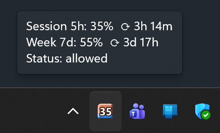
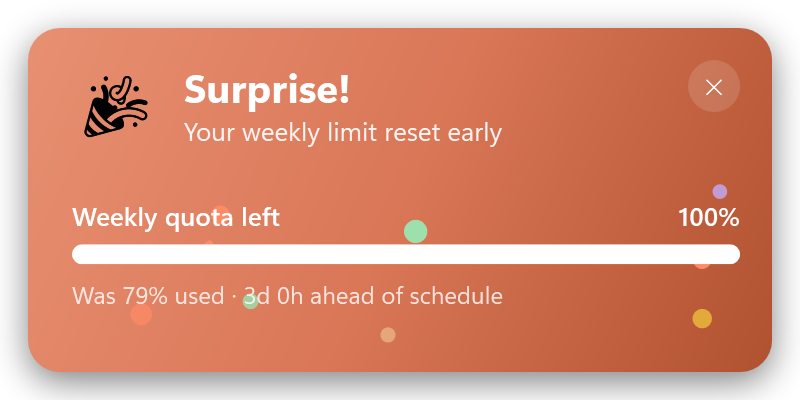
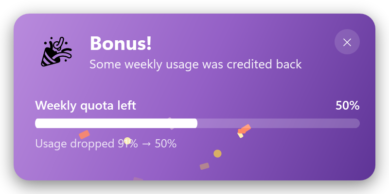
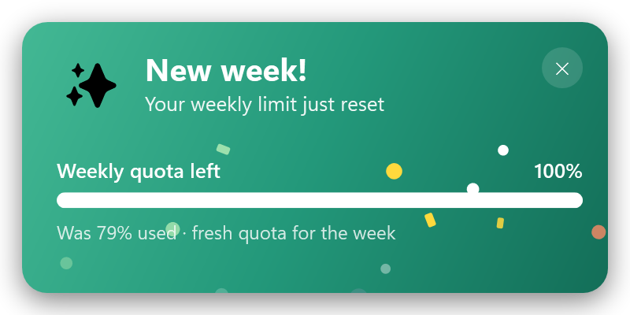
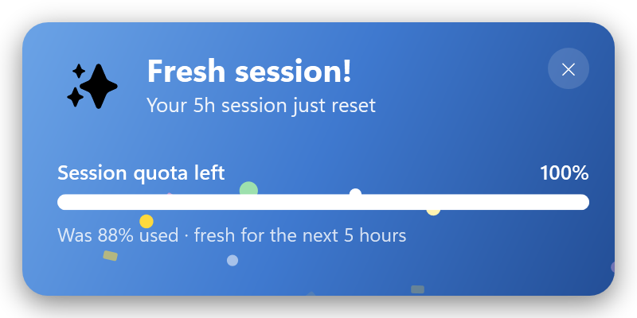
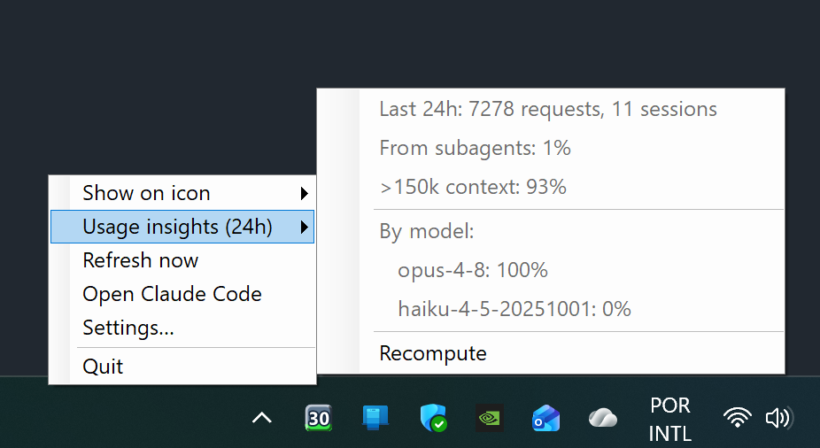
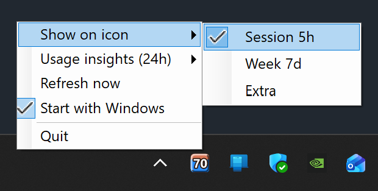

A native Windows tray monitor that shows your rate-limit usage as a crisp, DPI-aware icon — with burn-rate projection and a privacy-first 24h usage breakdown. Zero config: it reuses Claude Code's own login.
Built for clarity on real displays — it lives entirely in the tray and tells you exactly where you stand.
The percentage is drawn as a vector at the exact size the tray requests — no downscaled bitmaps. Stays razor-sharp on 125–200% displays.
A vertical bar rises from the bottom proportional to your usage, with a 3D bevel for relief. Blue when you're on track, red when you're not.
Projects when you'd hit 100% — warning you before the window resets, not after. A proportional pace line for the 7-day week, burn-rate regression for the 5h session.
A local, cost-weighted breakdown of your last 24h — by model, subagents, and large-context requests. Computed offline from your transcripts.
No API key to paste, no env var to set. It reuses the OAuth token Claude Code already stores when you log in.
Checks GitHub Releases and offers an in-app one-click update. Per-user install, no admin rights needed.
The tooltip packs everything into a single read — no dashboards, no browser tabs.

The icon's color tells you what's coming. The 7-day week uses a proportional pace line — your usage against the share an even burn would have spent by now — accurate from the very first reading. The 5h session uses least-squares regression on a short rolling history of your utilization.
At your current pace, usage stays under 100% until the window resets. The fill bar stays its normal blue — no action needed.
At your current pace, usage will hit 100% before the reset. The fill bar turns vivid red so you can ease off in time.
Every reset gets a celebratory, on-brand toast: a confetti burst and the quota bar visibly refilling. Each kind has its own color and headline, so you can tell what happened the instant it appears — without reading a word.

Your weekly limit reset ahead of its scheduled deadline — a known Claude Code quirk worth catching.

A partial mid-window credit dropped your weekly usage (e.g. 91% → 50%). Found money.

The calm, routine weekly reset — fresh quota for the week ahead.

The 5-hour session window rolled over — fresh for the next 5 hours.
All four are on by default — toggle each one independently in Settings.

The Usage insights (24h) menu is computed entirely on your machine from Claude Code's session transcripts — weighted by per-model price so the numbers reflect real cost, not request count.
Only token counts, model ids, and flags are ever read — never your message content. The insights scan is bounded to files touched in the last 24h and runs in the background. The rate-limit reading is a single 1-token API call every 5 minutes. Nothing leaves your machine beyond that, and there's nothing to log into.
Already using Claude Code? Then you're already set up.
Install it and run claude once so it stores your login token.
Grab ClaudeTray-Setup.exe from Releases and run it. Per-user, no admin.
The icon appears in your tray and starts reporting. Right-click for options.
